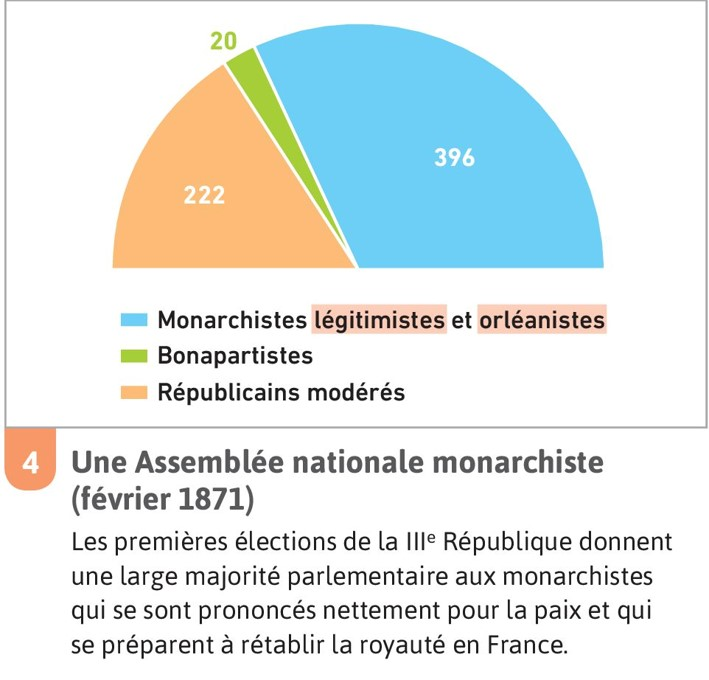

Pb : Comment la république s'installe en France ?
* La République est proclamée mais la guerre continue.
* Un gouvernement provisoire est instauré.
* la France est envahie et Paris est assiégée par les Allemands, mais n’est jamais envahie.
* Un armisice est conclu en janvier 1871 qui prévoit l’entrée des Allemands dans Paris.
* Des élections ont lieu en février 1871
Les monarchistes gagnent les éléctions car ils veulent la paix
* Doc p.153
* Adolphe Thiers devient chef de l’exécutif et est chargé de négocier le traité de paix.
Il négocie la paix
* Le traité de Francfort
26 mars 1871
Les parisiens doivent etre désarmés (le traité le prévoit) => Ca ne leurs plait pas
* La Commune de Paris (mars à mai 1871), une révolution.
Le gouvernement francais s'installe a Versailles et est inquiet de ce que peuvent faire les parisiens.
* Thiers veut contrôler militairement Paris...
Il y a des soldats francais qui arrivent
Les soldats du gouvernement refusent de tirer sur le peuple
Résultat => Les Parisiens refusent d'obeir au gouvernement ( révolution )
* La Commune de Paris (mars à mai 1871), une révolution.
Ils proclament le gouvernement insurrectionnel => La Commune de Paris
Révolution violente ( il y a pleins de fusillés )
Gouvernement anticlérical
Parce que l'Eglise est perçue comme un soutien du trône
Ils veulent plus de protection sociale
C'est un régime socialiste
Son drapeau est rouge
Une Guerre Civile commence entre les Parisiens ( les fédérés, les Communards ) et le gouvernement de Thiers à Versaille qui controle le reste de la France( les Versaillés )
A partir de mai 1871 : les combats ont lieu dans Paris
C'est court, mais très violent

Le 21 mai débute la semaine Sanglante
Les Versaillais écrasent la Commune de Paris (7000 morts dont 1400 fusillés + des milliers de gens arrétés ou déportés(4586 dont Louise Michel) )
Le chateau des tuileries est détruit